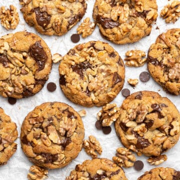

Chocolate Chip Walnut Cookies

These easy chocolate chip walnut cookies are a delicious way to give the nut lovers in your family a sweet treat. Semi-sweet dark chocolate chips, chopped walnuts, and a sprinkle of bright sea salt to balance the flavors make this an indulgent cookie to enjoy during those darker evenings as we move into fall and winter.
Ingredients
- 130 g (½ cups) Unsalted butter room temperature
- 120 (½ cups) Brown sugar
- 50 g (¼ cups) Granulated sugar
- 1 Egg
- 160 g (1⅓ cups) All purpose flour
- 40 (⅓ cups) Walnut flour
- 1 Teaspoon Salt
- 1 Teaspoon Baking soda
- 150 g (⅘ cups) Chocolate chips semi-sweet high quality chocolate eg. Callebaut
- 150 g (1⅕ cups) Walnuts chopped
Instructions
- With an electric hand mixer whip room temperature butter with the two different kinds of sugar for a few minutes
- Mix in the egg, just until combined
- Mix flour, walnut flour, salt, and baking soda together then add this mixture to the wet ingredients and fold with the help of a Rubber spatula just until combined. Do not overmix
- Fold in chocolate chips and walnuts. Leave some for later so you can place more chocolate chips and nuts on top of the half baked cookies
- Prepare 2 baking pans with parchment papers
- Divide the dough into 10 equal balls (using a Digital scale is handy) and place them onto the parchment papers leaving enough space between them to spread. I recommend baking 5 cookies at once
- Do not soften the surface of the balls, in fact, try to keep it as rough as possible for a nice, crackly surface. Press some more chocolate chips and walnuts on the surface of the cookies
- Let cookie dough rest in the fridge for an hour
- Pre-heat oven to 175 C / 347°F (no fan)
- After 1h chilling time, bake the cookies for 15 minutes in the following way: Bake for 10 minutes then place more walnuts and chocolate chips on top, then bake them for further 5 minutes.
- Let the cookies rest for a few minutes, then carefully remove them from the parchment and let them cool on a Cooling rack. Sprinkle with sea salt
- Serve them while they are slightly warm
- The cookies will further set as they cool. Store at room temp for a few days in air tight jar